<!DOCTYPE html>
<html>

<head>
    <link rel="SHORTCUT ICON" href="images/logo.png" />
    <meta charset="utf-8">
    <title>女人迷 womany | X Lab 跨界實驗室</title>
    <link rel="stylesheet" type="text/css" href="reset.css">
    <link rel="stylesheet" type="text/css" href="style.css">
    <link href='http://fonts.googleapis.com/css?family=Droid+Serif' rel='stylesheet' type='text/css'>
    <link href='http://fonts.googleapis.com/css?family=Montserrat' rel='stylesheet' type='text/css'>
    <link href='http://fonts.googleapis.com/css?family=Play' rel='stylesheet' type='text/css'>
    <link href='http://fonts.googleapis.com/css?family=Arvo' rel='stylesheet' type='text/css'>
    <link rel="stylesheet" href="flexslider.css" type="text/css" media="screen" />
    <script src="modernizr.js"></script>
    <!-- jQuery -->
    <script src="http://ajax.googleapis.com/ajax/libs/jquery/1/jquery.min.js"></script>
    <script>
    window.jQuery || document.write('<script src="js/libs/jquery-1.7.min.js">\x3C/script>')
    </script>
    <!-- FlexSlider -->
    <script defer src="jquery.flexslider.js"></script>
    <script type="text/javascript">
    $(function() {
        SyntaxHighlighter.all();
    });
    $(window).load(function() {
        $('.flexslider').flexslider({
            animation: "slide",
            start: function(slider) {
                $('body').removeClass('loading');
            }
        });
    });
    </script>
</head>

<body>
    <nav>
        <ul>
            
            <li>
                <p id="today">今天是<strong>5/15</strong> ↦ 瞧瞧 Daisy Chang的Idea吧！</p>
            </li>
            <li>
                <a id="home" href="http://womany.net/?ref=s-nav"></a>
            </li>
            <li>
                <a id="facebook" href="https://www.facebook.com/ooorangee"></a>
            </li>
            <li>
                <a id="linkedin" href="https://www.linkedin.com/profile/view?id=360418430&trk=nav_responsive_tab_profile_pic"></a>
            </li>
            <li>
                <form id='search' action='http://www.google.com/search' target="_blank" method='get'>
                    <input type="hidden" name="sitesearch" value="網址" />
                    <input id="s" name="q" type="text" />
                    <input id="r" type="submit" name="btn" value="" title="搜尋" />
                </form>
            </li>
        </ul>
    </nav>
    <div id="leftblock">
        <div id="intro">
            <p id="user">嘿，ooorang...</p></div>
        <div id="myself">
            <ul>
                <li id="one">
                    <a href="#homee">首頁</a>
                </li>
                <li id="about"><a href="#aboutme">關於悠然</a></li>
                <li id="me"><a href="#meb">自傳分享</a></li>
                <li id="plan"><a href="#plann">企劃經驗</a></li>
                <li id="work"><a href="#flexslidera">作品剪輯</a></li>
                <li id="idea"><a href="lab.html#cross">Lab關鍵字:跨</a></li>
                <li id="download"><a href="download.html
">CV自傳下載</a></li>
            </ul>
        </div>
    </div>
    <div id="homee">
        <div class="flexslider">
            <ul class="slides">
                <li>
                    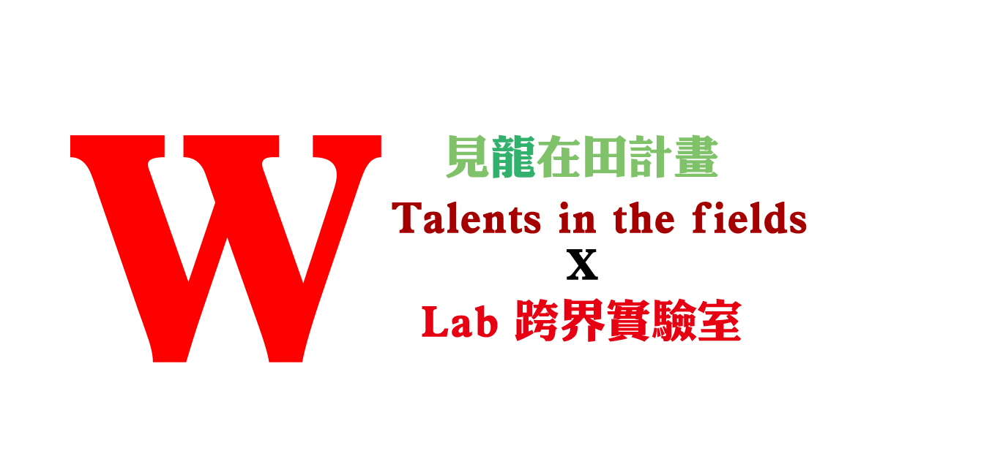
                </li>
                <li>
                    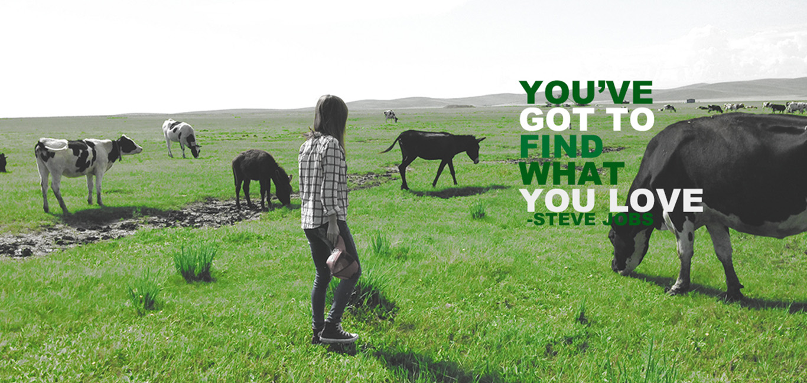
                </li>
                <li>
                    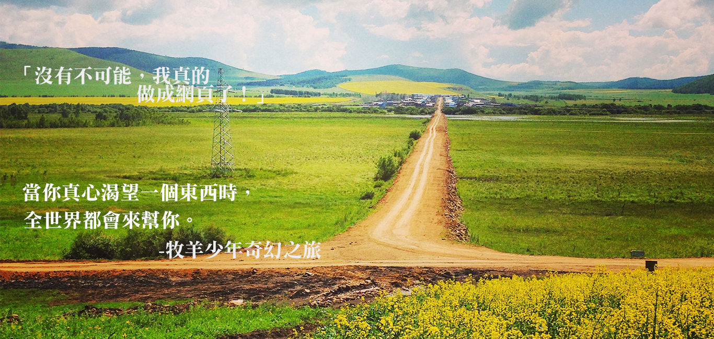
                </li>
            </ul>
        </div>
    </div>
    <div id="aboutme">
        
        <h1>張悠然</h1>
        <p id="namee">Yu-Jan Daisy Chang</p>
        <p id="about">
            <br> 聯絡方式: 0952-351-939 | ooorangee76@gmail.com
            <br>
            <br>
        </p>
        <hr id="aa" color="#FF8888" size="2" width="42%">
        <h2>學歷</h2>
        <p id="edu">
            國立臺灣大學
            <br> 生物產業傳播暨發展學系學位 2011.09 －2014.06
            <br> 相關主修領域：行銷學/整合行銷傳播 /廣告學/社會學/社會統計
        </p>
        <div id="other">
            <ul>
                <li>
                    <a id="za" href="#job"></a>
                </li>
                <li>
                    <a id="zb" href="#extra"></a>
                </li>
                <li>
                    <a id="zc" href="#elsee"></a>
                </li>
            </ul>
        </div>
    </div>
    <div id="job">
        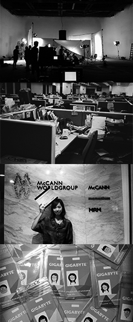
        <h2>工作經驗</h2>
        <p id="joba">技嘉科技 ——電競筆電產品專員 2014.10 －2015.03
            <br> •新筆電開發專案之規劃、執行，產品週期進度掌控、成本預算控制和結案程序
            <br> •與行銷部門間文案、行銷製作物溝通、資料彙整更新和發佈
            <br> •2015年度筆電產品行銷宣傳影片規劃 </p>
        <p id="jobb">臺灣大學職業生涯發展中心 ——設計工讀生 2013.02－2014.06
            <br> •職涯講座、可勵爾小學堂海報設計、2013玉山計劃刊物設計、2014年台大校園徵才視覺設計
            <br> •職涯講座、台大生活禮儀教室課前準備、協助活動進行</p>
        <p id="jobc"> 麥肯廣告 ——麥苗計劃實習生 2013.07－2013.09
            <br> •參與業務部與創意部門會議，研討客戶新產品廣告策略、參與客戶端新品行銷會議
            <br> •化妝品牌競爭者分析、廣告分鏡表製作、潤利艾克曼更新競品資訊
            <br> •協力錄製客戶新廣告腳本初稿配音
            <br>
        </p>
    </div>
    <div id="extra">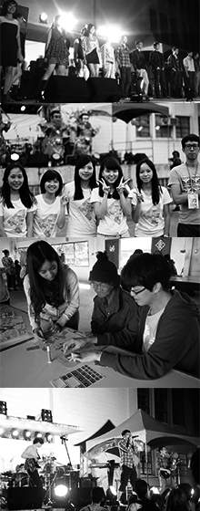
        <h2>課外活動經驗</h2>
        <p id="extraa">
            第六屆全國獸醫師節開幕影片組 ——採訪、後製 2013.10-2014.01
            <br>•實地採訪彰化縣農業處處長、台北市立動物園園長、多位獸醫系教授等等
            <br> •影片後期製作使用Adobe Premiere剪輯採訪影片,影片於一月六日全國獸醫師節開幕播出
            <br>
        </p>
        <p id="extrab">
            第五屆臺大泰北海外服務學習團 ——活動組 2012.10-2013.02
            <br>•企劃泰北華雲學校中學生職業性向發展、滿堂之家育幼院課後活動、課輔籌備規劃
            <br>•與泰北皇太后大學學生一同至原住民村落阿卡村做垃圾分類教育,並與村民進行撿垃圾活動
            <br>•拜訪泰北熱水塘榮民之家(國共內戰雲南籍軍人)舉辦新年剪紙活動
            <br>
        </p>
        <p id="extrac">
            第十八屆臺大藝術季 ——週五不夜城、開幕式籌備組員 2011.09-2012.05
            <br>•規劃籌備近五百人大型開幕式演唱會活動,並與表演樂團、歌手聯繫、接待
            <br>•企劃走秀party、擔任模特兒訓練規劃負責人,排定服裝搭配主題企劃、模特兒訓練
            <br>
        </p>
    </div>
    <div id="elsee">
        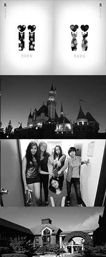
        <h2>得獎紀錄｜其他｜技術｜語言</h2>
        <p id="elsea">特殊活動:
            <br>柏克萊暑期學分班:選修海洋學、ESL課程 2012.07-2012 .08
            <br> 日本岡山縣佳豊庵打工換宿 2014.01-2014.02
            <br> 得獎紀錄:
            <br>第二十二屆時報廣告金犢獎平面廣告類大專組/ JUST US品牌廣告設計入選
            <br>
        </p>
        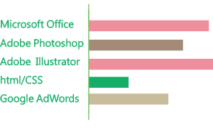
        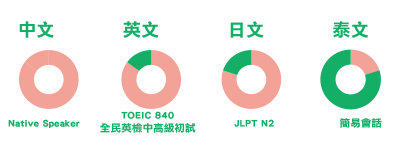
    </div>
    <div id="picc"></div>
    <div id="meb">
        <h3>自傳 Daisy Yu-Jan Chang</h3>
        <hr id="bb" color="#FF8888" size="2" width="63%">
        <p id="cona">Dear Womany:) :
            <br>&nbsp;&nbsp;&nbsp;&nbsp;您好，我是張悠然，去年畢業於台灣大學生物產業傳播暨發展學系；在學期間主修行銷、廣告、社會研究，並另外修習傳播學程，專題探討傳播為人類所帶來影響與力量。 大學時期至今的生涯，於我而言，如本精彩連環、回味無窮的遊記，記載著我的成長與經歷，願與您分享我生命中最燦爛的旅程。
        </p>
        <h4>－藝術靈魂與行銷交織</h4>
        <p id="conb">
            <br> &nbsp;&nbsp;&nbsp;&nbsp;我喜歡塗鴉，一拿起筆，連廣告摺頁的空白處都是我的創作天地，雖然學生生涯一路走來都非藝術相關科系畢業，但課餘期間所參與的藝文活動，滋潤了我內心的創作靈魂。大學期間曾加入了台大藝術季活動籌備團隊、到藝文空間奧賽德實習、選修謝宏達大師的藝術與創作。藝術之於我而言，除了是興趣、休閒，更是舒緩平日課業繁忙的一帖良藥，而在繪畫的同時，也激發我思考將藝術與專業結合，讓枯燥的知識增添色彩；因此，在規劃許多的行銷企劃上，我熱愛將藝術融入其中。大三下學期，與系上兩位志同道合一起參加二十二屆時報廣告金犢獎，我們選擇金飾JUST US為廣告主，結合行銷、傳播符號學，佐以藝術品味，鎖定金飾目標客群為同性戀者，並以社會學角度分析品牌所能締造的價值觀，創作出跨越性別戀情的系列平面廣告”他他” 與“她她”篇，最後也獲得二十二屆廣告金犢入選獎。 我認為，行銷企劃除了要了解消費者之外，如果能夠將產品融合藝術與創新因子，走在消費者視覺的前端，將可為企劃帶來更多吸引力。
        </p>
        <h5>－走向世界的舞台</h5>
        <p id="conc"> &nbsp;&nbsp;&nbsp;&nbsp;林懷民曾言：「年輕的流浪是一生的養分。」，海外的探索帶給我的不僅止於風景，人文與社會思想、知識與歷史，讓我思考文化衝擊、文化交流甚至文化融合背後所隱含的寓意。
            <br> &nbsp;&nbsp;&nbsp;&nbsp;大二的暑假，我前往了美國加州UC Berkeley修習Summer session課程；有別於台灣填鴨式教學以及學生上課沈默的狀況，國外的授課方式與學生主動踴躍的上課態度讓我為之震驚，我更加認真檢視自己在國際競爭上的渺小與學習上的不足；在Session期間也結交了各國朋友，不僅拓展國際社交圈，也對不同文化間的習俗有更深的體會。
            <br> &nbsp;&nbsp;&nbsp;&nbsp;大三期間，我加入了學校行政單位協辦的海外服務性社團 - 泰北服務團，並於寒假期間，前往泰國北部－清萊省進行服務活動。與當地學子交流時，我感受到他們很純真，願意敞開心扉分享、總是想將最好的一面回饋給老師，不過，由於當地長期接受外來資助，有些學校甚至逼迫學生唱台灣流行歌，歡迎服務團隊，因此也讓我思考服務隊的到來是否帶給了他們負面的影響。旅途期間，我深刻體會城鄉的差距與社會甚至政治的影響力。此外，相較於國內服務隊，海外服務團更需承擔未知的風險，在泰北服務團的旅途中，更是佈滿了各種挑戰；先是同行隊友食物中毒，導致隔天人力資源分配吃緊，接著教案資料遺失、教室投影機無法使用，重重困難也練就我們團隊快速地思考與問題解決的能力，例如熬夜重新分配人力、教案重新規劃等等。經歷了各種荊棘難關，我深深體會團隊合作精神的重要，期間，也培養出了隊友十三人無堅不摧的革命情感。冒險，讓我更加勇敢；合作，使我學會有效溝通，我想，泰北團培養出了我這兩種重要的人格特質。
            <br> &nbsp;&nbsp;&nbsp;&nbsp; 大四的寒假，我選擇到日本岡山縣打工換宿。當時的念頭僅是想在學生時期，有段獨自出走的時間，加上在學校選修日文，欲牛刀小試自己的日文程度，因此決定前往日本。打工換宿的雇主—佳豊庵是專門種植葡萄(ヒオーネ)、製做甜點的小農，而在換宿期間，我學會了製作日式小甜點、寒冬裡到葡萄園修剪葡萄樹枝、劈柴、市集叫賣。勇於嘗試未曾做過的事，也讓我發現自己在各方面其實都具備了潛藏的天份。這趟旅程，我獨自一人搭飛機、住宿、搭乘高速巴士、鐵路。相較於以往的團隊合作經驗，打工換宿則讓我學習更加獨立自主。
        </p>
        <h6>－從廣告公司培養行銷視野</h6>
        <p id="cond"> &nbsp;&nbsp;&nbsp;&nbsp;中學時期，一支潘婷的洗髮精廣告，竟能讓我激動落淚，因此激發了我對廣告公司的好奇，想一窺創意靈魂發源地的衝動。大四暑假，我參與了台灣4A之一的麥肯廣告公司麥苗實習計劃，實習期間，經由許多分析產品競品與創意發想的機會，增進了我對廣告的分析能力，也讓我了解一個Idea的誕生，背後是必須經過創意人員無數的創意會議討論而產出。而身為廣告AE實習生，我們必須企圖以廣告行銷分析的角度為客戶解決問題。此間，我花最多時間整理的市場分析是一款廣告主的眼線液筆廣告，當時廣告主在廣告中欲主打產品特點是「超激細」眼線液筆，然而，在各大論壇上地毯式搜索資料後，我發現許多消費者並不在意眼線液筆是否非常細，耐久、易暈，反而才是消費者相當在意的購買因素。此外，製作了此份產品分析情報，我搜索了Fashion Guide, Urcosme, PTT等等美妝論壇中的文章，更加親自驗證了數位時代裡傳播學的兩級傳播（Two-step flow of communication）理論，即領導群眾(發文的部落客)很容易改變消費者的想法。
            <br> &nbsp;&nbsp;&nbsp;&nbsp;在麥肯廣告實習的經驗中，讓我對廣告代理商的營運模式與廣告AE所扮演的角色有更深入的了解，也激起了我想往企業端擔任行銷企劃人員的意念。
            <br>
            <br> &nbsp;&nbsp;&nbsp;&nbsp;綜合大學四年豐富的學習生涯，在專業領域上，我具備了行銷、社會學、傳播學方面一定水準的知識，社團經驗的灌溉，使我更懂得勇於表達己見、傾聽同儕想法與團隊互助合作；在實習與工作經驗上，認真負責則是主管們給予我的肯定。因此，對於擔任Lab跨界實驗室，我充滿信心與熱忱，並期待著有機會加入女人迷，一起與女人迷奮鬥:)。
            <br>
            <br> 張悠然2015.5.15, Taipei
        </p>
    </div>
    <div id="plann">
        <h2>企劃經驗分享</h2>
        <iframe src="plan.pdf" style="width:600px; height:500px;" frameborder="0"></iframe>
    </div>
    <div>
        <div id="flexslidera">
            <h2>作品分享</h2>
            <hr id="ff" color="#DDDDDD" size="2" width="38%">
            <ul id="workshare">
                <li>2013&nbsp;臺灣大學職涯學苑名人講座海報設計</li>
                <li>2013&nbsp;第二十二屆時報廣告金犢獎平面廣告類大專
                    <br>&nbsp;&nbsp;&nbsp;&nbsp;&nbsp;&nbsp;&nbsp;&nbsp; /JUST US品牌廣告設計入選</li>
                <li>2014&nbsp;臺灣大學校園徵才專刊封面設計</li>
                <li>2014&nbsp;臺灣大學校園徵才專刊封面設計</li>
                <li>2015&nbsp;Koala Chat貼圖設計比賽｜最可愛獎</li>
            </ul>
            <div class="flexslider">
                <ul class="slides">
                    <li>
                        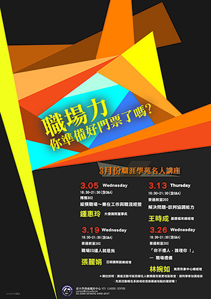
                    </li>
                    <li>
                        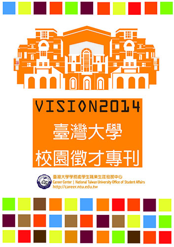
                    </li>
                    <li>
                        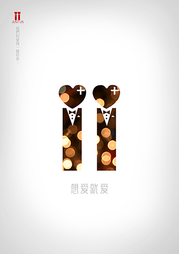
                    </li>
                    <li>
                        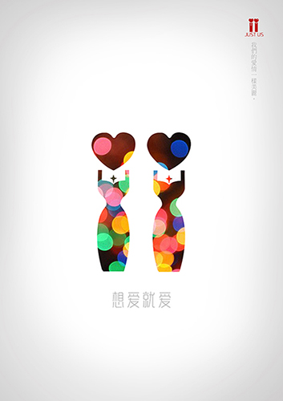
                    </li>
                    <li>
                        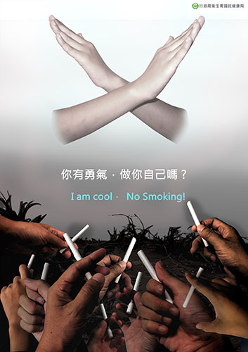
                    </li>
                    <li>
                        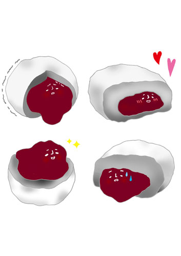
                    </li>
                </ul>
            </div>
        </div>
    </div>
</body>

</html>
